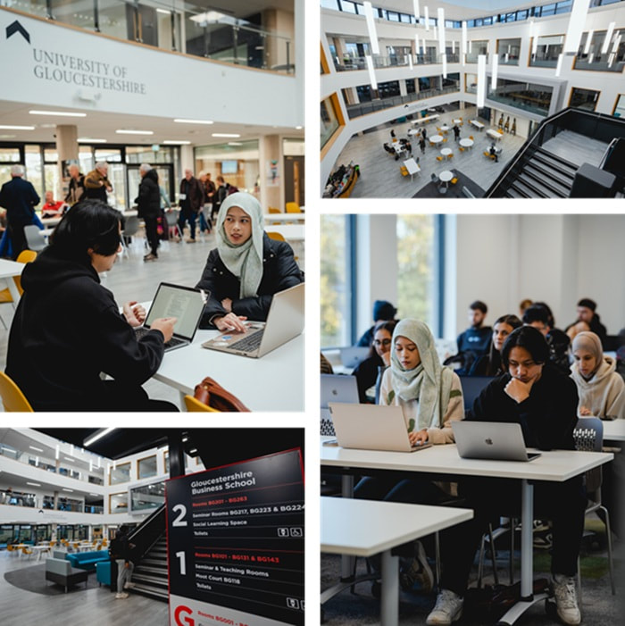
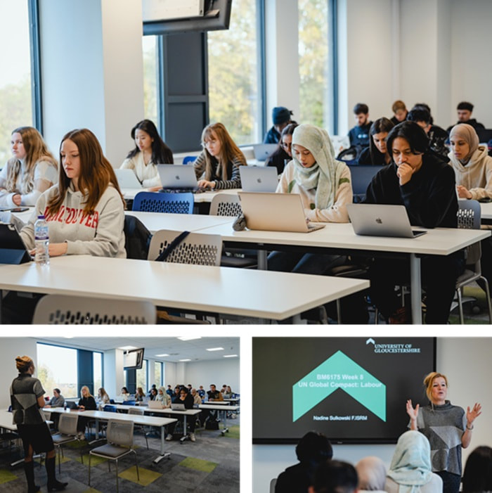
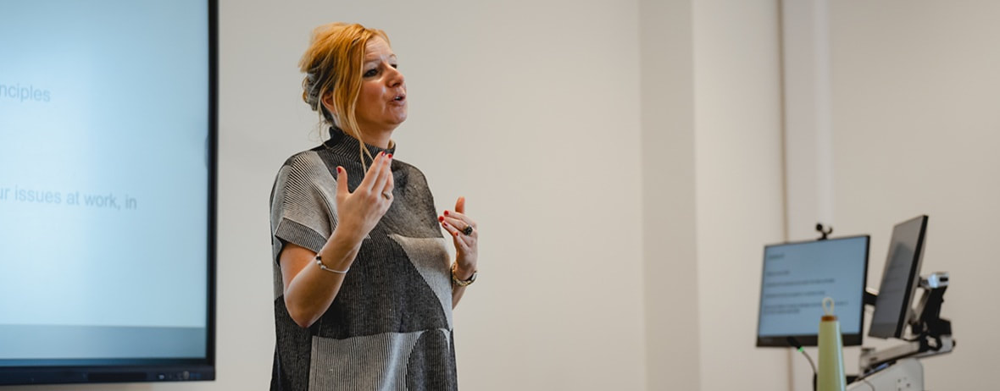
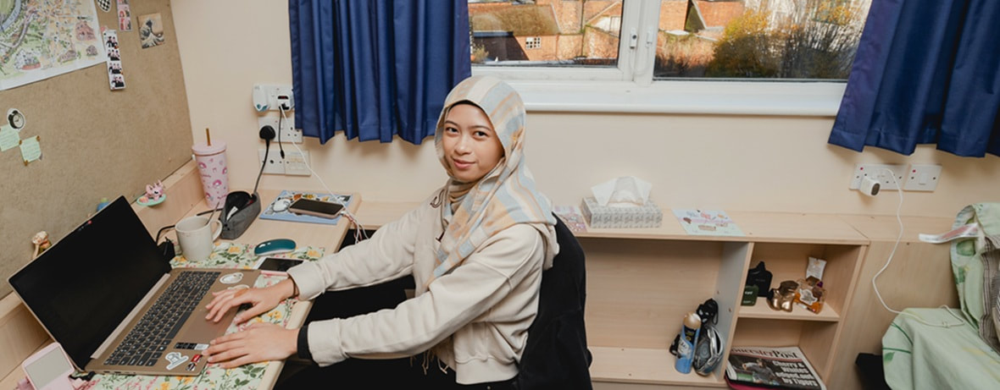
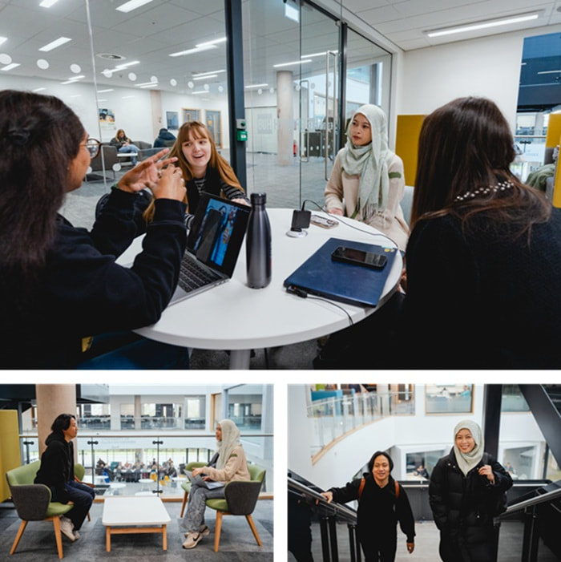
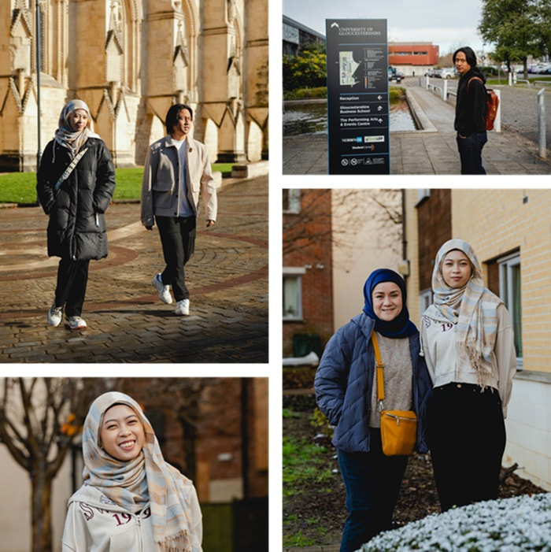

Turn your Double Diploma into a UK bachelor's degree — and earn the right to work in Britain for two years after you graduate.
Your diploma is only the beginning. Graduates can continue their journey with a one-year "top-up" at the University of Gloucestershire in England — converting the credits you have already earned into a full UK bachelor's degree.
It is the natural next step after LOYLA's leadership expedition to Oxford and London: a chance to live, study and graduate in the United Kingdom, then launch your career with international experience already on your CV.
Pathway offered through UTM SPACE and partner arrangements. Programmes, intakes and eligibility are confirmed by the admissions team.

Four steps from a Malaysian diploma to a British degree and a UK work visa.
Finish the Diploma in Business Administration (Muamalat) with Caliph Academy in Kuala Lumpur.
Choose your bachelor's programme and secure your place at the University of Gloucestershire for the January or July intake.
Spend a single year at the Oxtalls campus in Gloucestershire, completing your degree among students from around the world.
Receive your UK bachelor's degree and qualify for the two-year Graduate Route post-study work visa.
Top up to a full UK honours degree in the field that fits your ambitions.
Build on your Muamalat and business foundation with advanced management, strategy and leadership — ideal for careers across Islamic finance, banking and enterprise.
Move into the fast-growing world of technology — software, data and digital systems — with a UK computing degree that travels anywhere.
An international experience that transforms your career prospects.
Qualify for the UK Graduate Route and work in Britain for two years after graduating.
Cross-cultural learning and professional networking with peers from across the world.
A single top-up year turns your diploma into a full degree — accelerating your career.
Graduate with a globally recognised qualification and real international experience.

A glimpse of the campus, classrooms and community that await in England.




Photos: University of Gloucestershire · UK study pathway.

Speak to our team about progressing from your Double Diploma to a British degree.
Book For College Tour